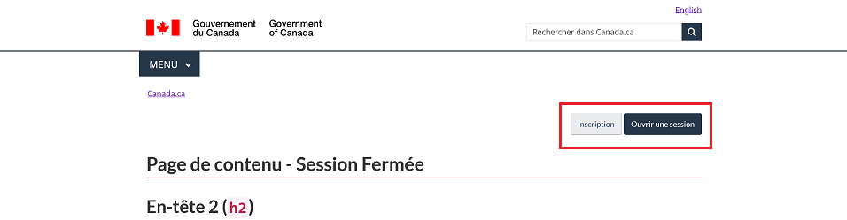
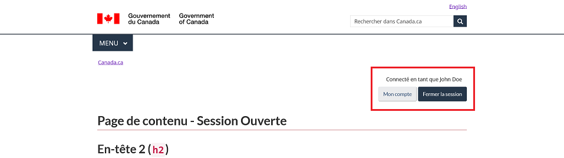

Modèles d'authentification
Ce composant supporte les 4 variants de modèle de conception suivants:
- Bouton contextuel « Se connecter »: Un lien pointant vers une page d'authentification désignée
- Session fermée: Un modèle qui présente un bouton d'inscription et un bouton de connexion.
- Session ouverte: Un modèle qui présente un bouton afin d'acceder au compte de l'utilisateur, un bouton de déconnexion ainsi qu'un texte confirmant que l'utilisateur est bien connecté. Note: La boîte de dialogue d'invite et l'intéraction résultant de la connexion sont actuellement hors de portée.
- Session utilisateur active: Un modèle affichant l'information de la session d'un utilisateur avec une session active (connecté), personnalisé avec son nom d'utilisateur.
Bouton contextuel « Se connecter »
En définissant les paramètres appropriés, le bouton de connexion contextuel apparaîtra au chargement de la page et sera situé dans le coin supérieur droit de la page sous la ligne horizontale tel qu'indiqué dans les conseils sur le bouton contextuel « Se connecter ».
Structure HTML - Version 1.0
- Bouton de connexion contextuel
- Bouton de connexion contextuel incluant un libelé allongé
- Bouton de connexion contextuel sans aucun libelés personnalisés
- Bouton de connexion contextuel sans le menu GCWeb
Configuration pour GCWeb Jekyll
La variable auth DOIT être définie et complémentée du paramètre type avec la valeur "contextual" afin d'initialiser le modèle du bouton de connexion contextuel.
Paramètres à définir :
linkce paramètre DOIT être défini afin d'assigner un lien (URL) d'application au bouton vers laquelle les usagés seront redirigés pour se connecter.labelavec un maximum de 12 caractères alloué incluant les espacements, ce paramètre est OBLIGATOIRE et si défini et il générera le text du bouton pour toutes les fenêtre d'affichage d'extra-extra-petite à extra-large (xs, xxs, sm, md, lg et xl).labelExtendavec un maximum de 25 caractères alloué incluant les espacements, ce paramètre est optionnel et si défini, il générera le text du bouton pour les fenêtre d'affichages petite et au dessus (sm, md, lg et xl).
Modèles de Session fermée / Session ouverte
Au chargement de la page, les boutons doivent apparaîtres dans le coin supérieur droit de la page sous la ligne horizontale.
Structure HTML - Version 2.0
Example de code de l'inclusion démontrant le HTML du composant:
Configuration pour GCWeb Jekyll
La variable auth DOIT être définie et complémentée du paramètre type avec la valeur "signedoff" ou "signedon" afin d'initialiser le model Session fermée ou Session ouverte.
Paramètres à définir :
- signedoff attribué comme valeur au paramètre
type, les boutons "Inscription" et "Connexion" apparaîtront au chargement de la page et seront localisé dans le coin supérieur droit de la page sous la ligne horizontale. - signedonattribué comme valeur au paramètre
type, les boutons "Mon compte" et "Déconnexion" apparaîtront au chargement de la page et seront localisé dans le coin supérieur droit de la page sous la ligne horizontale suivi du texte "Connecté en tant que [nom complet]" juste en dessous..
Modèles de conception précédents
Modèle précédent (Page de contenu - Session fermée)
Les boutons "Inscription" et "Ouvrir une session" étaient situés du coté droit de la page, dernier élément de l'entête <header> donc apparaissant entre le fil d'ariane et la balise <h1> du contenu.

Code
<section id="wb-so">
<h2 class="wb-inv">Information de l'utilisateur actuel</h2>
<div class="container">
<div class="row">
<div class="col-md-12">
<button class="btn btn-default" type="button">Inscription</button>
<button class="btn btn-primary" type="button">Ouvrir une session</button>
</div>
</div>
</div>
</section>Modèle précédent (Page de contenu - Session ouverte)
Les boutons "Mon compte" et "Fermer la session" ainsi que le texte "Connecté en tant que [nom complet]" étaient situés du coté droit de la page, dernier élément de l'entête <header> donc apparaissant entre le fil d'ariane et la balise <h1> du contenu.

Code
<section id="wb-so">
<h2 class="wb-inv">Information de l'utilisateur actuel</h2>
<div class="container">
<div class="row">
<div class="col-md-12">
<p><span class="mrgn-rght-md">Connecté en tant que <span>John Doe</span></span></p>
<button class="btn btn-default" type="button">Mon compte</button>
<button class="btn btn-primary" type="button">Fermer la session</button>
</div>
</div>
</div>
</section>Structure HTML - Version 2.0
Example de code de l'inclusion démontrant le HTML du composant:
- Modèle de Session fermée.
- Modèle de Session ouverte.
- Bouton contextuel « Se connecter »
- Bouton contextuel « Se connecter » incluant un libellé personnalisé étendu
- Bouton contextuel « Se connecter » sans aucun libellés personnalisés
- Bouton contextuel « Se connecter » sans le menu GCWeb
Classe CSS
Certaines classes CSS spécifiques ont été ajoutées à l'id unique #wb-so du composant.
Détails de la page
- Date de modification :